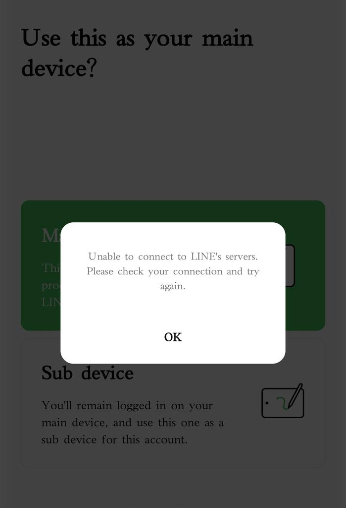
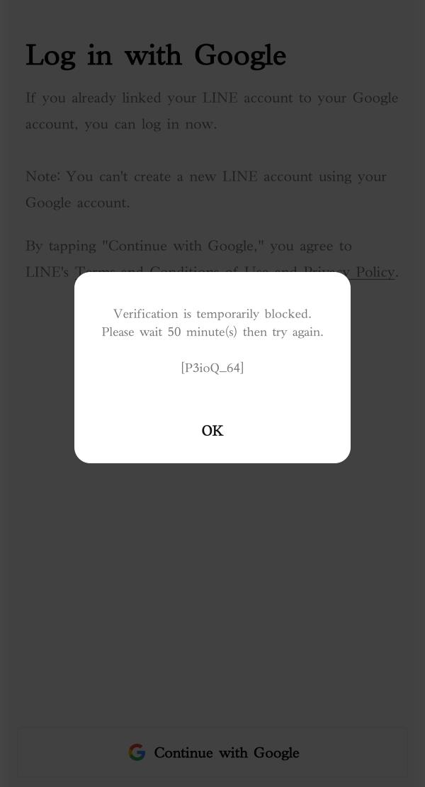

大狐帝国史官邹智萱（笔名段歌文）
@Rococo90933671
刚才试图登录LINE，失败了，下面是详细情况：
2024年下半年注册了一个号，当时完全没遇到什么阻拦，也能正常使用，甚至还在电脑上登录过，也加过几个好友（当时还有一个假冒🐴斯克的人想讹我钱）。
2025年开始以后就一直登录不上了，电脑上甚至显示无法连接服务器，可能是🪜不干净的问题。
现在的问题是，🪜不是以前的🪜了，但是在手机APP端试图用Google登录，还是被block了，而且在被block之前也有甚至连接不上服务器的情况。
而在电脑上，网是连上了，但是一直提示账号或者密码不正确，疑似被系统销号了，毕竟一两年没登（但是不愿意放弃希望……）

